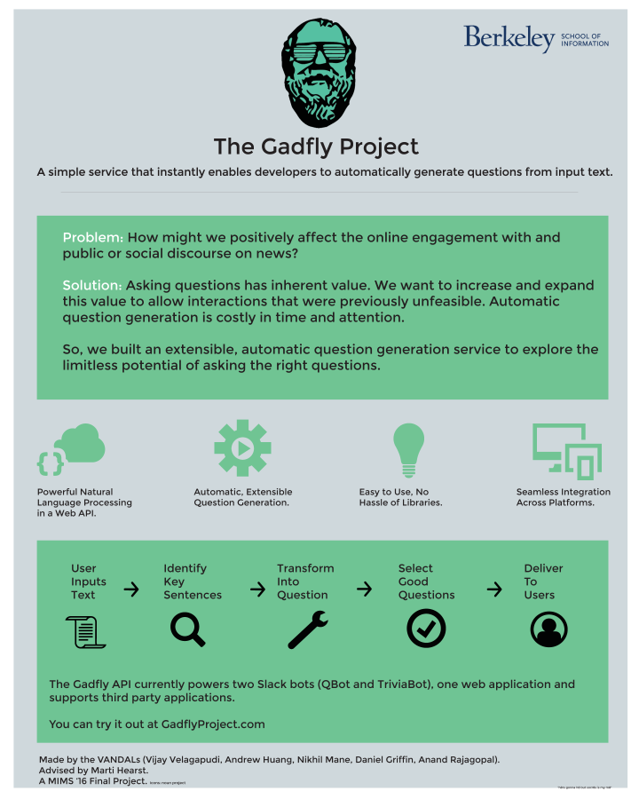

Graphic Design
a poster, an infographic, and a book
- Poster Design Infographic Design
The Gadfly Project

This poster was created as a deliverable for my degree capstone project. Here’s a hi-res version. The main goal for the poster was to communicate what we had done clearly and succinctly. At the same time, I wanted to adverise the API that we created (more details).
The Rise of Twitch
The infographic depicts Twitch’s growth from 2013 to February 2014 along with the position it occupies in the growing online video consumption space. I have also included a brief narrative of Twitch Plays Pokemon, a social experiment to play the Pokemon game series using commands input via chat.
Since, the subject deals with video games, I used 8bit icons, typography and “hand drawn” dotted lines. Note, the comic book style transition arrows for maintaining a clear visual hierarchy. Best part? I drew some Pokémon.